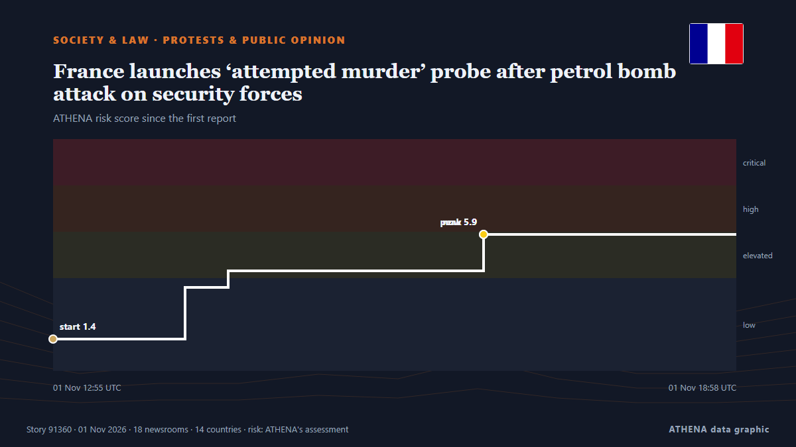

Διαμαρτυρίες & κοινή γνώμη
| 19 Οκτ | 0 |
|---|---|
| 20 Οκτ | 0 |
| 21 Οκτ | 0 |
| 22 Οκτ | 0 |
| 23 Οκτ | 1 |
| 24 Οκτ | 0 |
| 25 Οκτ | 0 |
| 26 Οκτ | 1 |
| 27 Οκτ | 0 |
| 28 Οκτ | 1 |
| 29 Οκτ | 2 |
| 30 Οκτ | 10 |
| 31 Οκτ | 4 |
| 1 Νοε | 5 |
Οι τίτλοι των ειδήσεων παρουσιάζονται στα αγγλικά, όπως δημοσιεύτηκαν.

France launches ‘attempted murder’ probe after petrol bomb attack on security forces
French authorities have initiated an attempted murder investigation after a petrol bomb was thrown at police during protests in Paris. από Arab News
USA Clock Change: Daylight Saving Time Ends November 1
Most of the United States will turn clocks back one hour on Sunday, November 1, restoring the usual winter time difference with Greece after a week in which the gap was one hour smaller. από Greek Reporter
At least 60 protesters injured in clashes across France
At least 60 protesters have been injured in clashes and unrest during demonstrations in several French cities. από AzerNews
Portugal police storm housing protest camps in Lisbon, Porto
Clashes broke out as officers again dispersed housing protesters from tent camps in Lisbon and Porto. από DW English
France deploys 70,000 police officers to prepare for new wave of protests on Halloween
Emmanuel Macron's government deploys 70,000 police officers as France braces for a third week of intense protests amid over $1 billion in losses. από Fox News (World)
Police clear new Lisbon housing protest camp after thousands rally
LISBON, Nov 1 - Police moved into Lisbon's Rossio Square on Sunday to clear a tent camp erected after thousands marched demanding Portugal's minority centre-right government withdraw a rental bill… από The Straits Times
Thousands Take Part in Halloween Protests
Two demonstrations took place in Berlin. από Berlin Spectator
Third weekend of protests in France as youth-led rallies sweep Europe
The Interior Ministry told reporters that 70,000 people are estimated to have turned out for the main protest in Paris. από The Irish News (Belfast)
Mass protests sweep Italy during nationwide strike
Grassroots union Unione Sindacale di Base called 24-hour general strike, with protests planned in more than 40 cities. από Express Tribune
Gen Z protests reach Germany as over 160,000 expected at Halloween rallies
Demands include opposing compulsory military service and investing in education amid rising costs. από The Straits Times
Average taxi income rises: survey
A recent survey by the Moroccan Center for Citizenship found that 87.3% of respondents are dissatisfied with public healthcare services, while 76.2% are unhappy with taxi services. από Hespress English
Third weekend of protests in France as youth-led rallies sweep Europe
The Interior Ministry told reporters that 70,000 people are estimated to have turned out for the main protest in Paris. από The Irish News (Belfast)
Youth protests begin in over 30 German cities as authorities warn of possible unrest
In Berlin, demonstrators are gathering at the Brandenburg Gate with more than 10,000 participants expected. από TASS (English)
Fears of violence as France braces for Halloween protests
France will deploy some 70,000 police officers in Paris and other cities ahead of a new round of nationwide protests on Saturday, with Interior Minister Laurent Nuñez warning of a "very high risk of… από France 24 English
'Won't move forward without public': Arunachal CM amid protests over Siang project
Arunachal Pradesh CM Pema Khandu has assured residents that the proposed 11,200-MW Siang hydropower project will not be imposed on them, saying a decision will be taken only after its feasibility… από Times of India
Thousands of students and workers protest in Italy under heavy security
Thousands of students and workers took to the streets across Italy on Friday, calling for more school funding and relief from the soaring cost of living, amid a high police presence to avert possible… από The Local Italy
Europe's Gen Z protesters just want to be heard
MAYA Gourdel, a 19-year-old student in Brussels, sits at a desk writing slogans against those running her country: “If we burn, you burn with us!” από New Straits Times
French interior minister to deploy 70,000 police for Halloween protests
PARIS, Oct 29 - French Interior Minister Laurent Nunez said that this Saturday was looking like \"a very high risk\" day for public order and that he would again deploy 70,000 security forces to try… από The Straits Times
France's Yellow Vest movement calls new protests for October 31st
France's Yellow Vest movement, which has helped organise protests rocking the country, called Saturday for new demonstrations on October 31. από The Local France